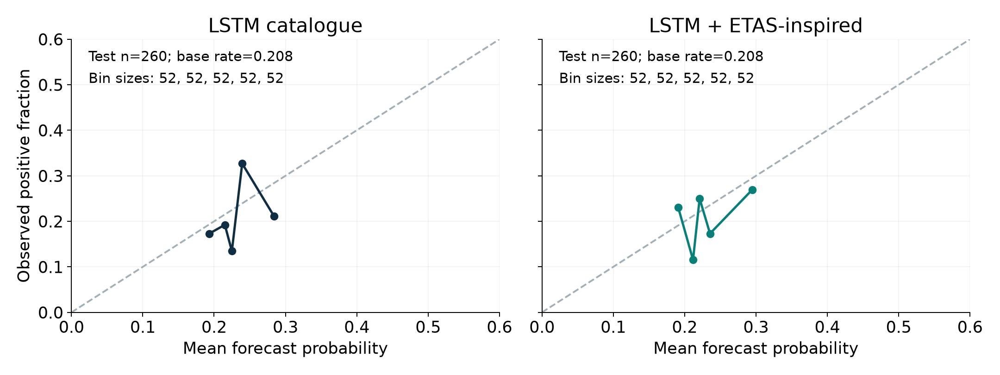
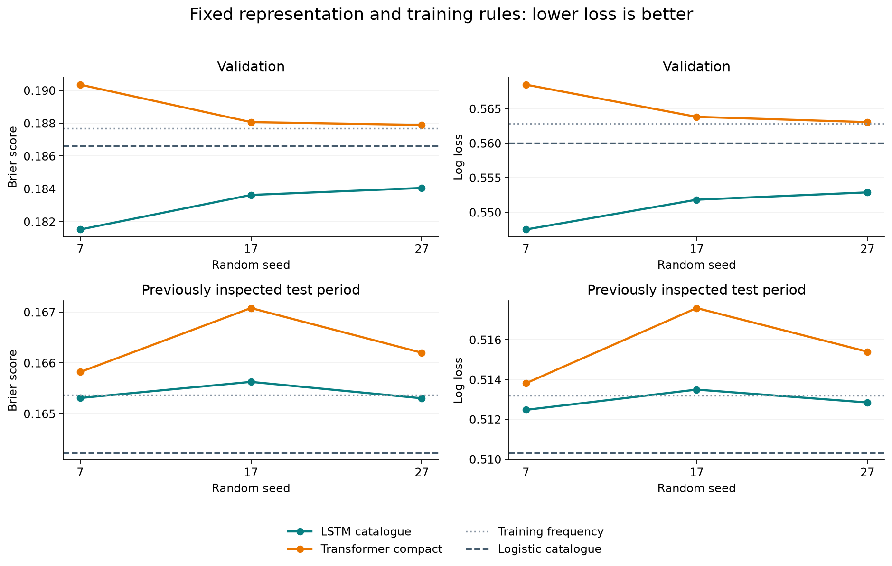

ETAS-inspired feature experiment
From a seismic research question to a controlled learning experiment
Study how adding an activity feature changes an LSTM under a fixed protocol. This laboratory activity includes its own reference forecasts and recorded results. For the guided LSTM and Transformer session, open the practical guide.
Open the notebook with the Colab button, then upload data-pack.zip or course-pack.zip when prompted. You can also open the downloaded notebook using Colab → File → Upload notebook and upload the course pack when prompted.
The research question we carry into practice
How can we represent seismic history so that a model can learn something useful about what follows? The presentation develops this question through the published Spatial Statistics study and the aftershock work from Isidora Jara’s thesis and the subsequent manuscript.
| Research step | Representation and question |
|---|---|
| Spatial Statistics study | ETAS-derived intensity summaries; predict their maximum and its macrozone |
| Isidora’s thesis and subsequent manuscript | Aftershock sequence representations, predictive tasks and generative modelling |
| This practical | Daily regional catalogue channels; estimate next-week occurrence probability |
The practical uses a new, deliberately small target. It illustrates the same modelling decisions without reproducing the research results. An ETAS–GAN combination remains a proposal outside the empirical scope of the manuscript and this exercise.
Our thread is question → representation → model and loss → evidence. A flexible tool is useful when these choices form a coherent scientific experiment.
Two ways to participate
Run and modify the cells if you are comfortable with Python, or follow the prepared outputs and contribute a hypothesis and interpretation. Both routes investigate the same scientific question. The experiment adds one channel to the LSTM. A separate notebook below studies a Transformer with fixed sinusoidal positions.
One concrete task
At each Monday forecast origin, use the previous 30 days to estimate the probability of at least one event with catalogue magnitude M ≥ 5 in the next seven days.
| Setting | Frozen teaching configuration |
|---|---|
| Region | Latitude −34 to −28, longitude −74 to −69 |
| Source | USGS ComCat, 2000–2025 |
| Input events | Catalogue magnitude M ≥ 4.5 |
| Training origins | 2001–2016 |
| Validation origins | 2017–2020 |
| Test origins | 2021–2025 |
| Forecast target | At least one qualifying event in [t, t + 7 days) |
| Neural model | LSTM with 16 units and a sigmoid output |
| Comparisons | Training prevalence and logistic regression |
Magnitude 4.5 is an input threshold, not a claim of uniform completeness. The notebook shows training-period coverage and magnitude-frequency diagnostics. The larger frozen download starts at magnitude 3 for these diagnostics.
From history to a weekly probability
The LSTM learns a representation of the ordered daily inputs. The sigmoid output and binary cross-entropy connect that representation to the weekly occurrence question. The training and prediction steps are:
model = keras.Sequential([
keras.layers.Input(shape=(30, X_train.shape[-1])),
keras.layers.LSTM(16),
keras.layers.Dense(1, activation="sigmoid"),
])
model.compile(
optimizer=keras.optimizers.Adam(learning_rate=0.001),
loss="binary_crossentropy",
)
history = model.fit(
X_train, y_train,
validation_data=(X_val, y_val),
epochs=20, batch_size=64,
callbacks=[early_stopping],
shuffle=False,
)
probability = model.predict(X_val).ravel()compile specifies the optimizer and loss; fit updates weights using training windows; predict returns probabilities for the validation histories.
Compare catalogue inputs with an added activity feature
Before training: predict whether the extra channel will help, and explain why. It gives greater weight to larger and more recent events; its information may also be redundant with the catalogue channels.
Add the ETAS-inspired score to the feature list, update the model input and retrain. Keep the target, splits, seed and hyperparameters fixed. Compare validation Brier score and log loss with the catalogue-only model.
After training: compare the result with your hypothesis. Did the same channel help logistic regression? Record what changed, whether the difference is small, and why one run cannot establish general superiority. The index is an input representation with illustrative parameters, not a fitted ETAS rate.
Continue as homework
Save the optional 14-versus-30-day comparison for after the session. Rebuild the windows, inspect a boundary example and compare only on validation while keeping the seven-day forecasting question fixed. The homework guide provides the follow-up route. This experiment’s test results have already been inspected; that period is no longer an untouched test for selecting a new configuration.
Reading the output
- Brier score: average squared probability error. Smaller is better.
- Log loss: penalizes confident incorrect probabilities. Smaller is better.
- Calibration: compare mean predicted probability with the observed fraction, showing the number of forecasts in each bin.
- Base rate: the observed frequency of positive target weeks. The constant baseline uses training only.
Weekly targets do not overlap, but earthquakes and adjacent input windows can still be dependent.
Example results: one seed
Use the notebook with outputs to inspect the predictions before proposing a change. Software and execution context are described in Environment and setup.
Training contains 834 weeks (197 positives), validation 208 (52 positives), and test 260 (54 positives). Three boundary or incomplete weeks are excluded.
| Model | Validation Brier | Test Brier | Test log loss |
|---|---|---|---|
| Training frequency | 0.187690 | 0.165370 | 0.513204 |
| Logistic, catalogue | 0.186611 | 0.164229 | 0.510317 |
| Logistic + score | 0.185589 | 0.164204 | 0.509854 |
| LSTM, catalogue | 0.183109 | 0.164984 | 0.511939 |
| LSTM + score | 0.182790 | 0.164718 | 0.511082 |
Adding the score changes the LSTM losses only slightly in this run. Logistic regression has the lower test Brier score. This single-seed result does not establish that either architecture is generally superior.

The course pack contains unrounded metrics, predictions, configuration and runtime metadata.
Fixed-position Transformer comparison
Download the executable demo · Open prepared outputs
This is a separate catalogue-only comparison across seeds 7, 17 and 27. It reuses the frozen data, windows, training-only normalization and weekly target, but does not add the ETAS-inspired channel. Both neural models receive the same 30 × 3 inputs. Read its LSTM results together with its Transformer results; they are not the single-seed values in the original exercise above.
The model projects each day to 16 dimensions, adds fixed sinusoidal position information, and applies one attention block with two heads (key dimension 8), a 32→16 feed-forward block, residual connections and normalization. Temporal averaging and a sigmoid produce one probability. All input days precede issuance; attention within that history does not expose future target observations.
Follow the tensor shapes in the written model, then compare all three seeds. This model uses fixed sinusoidal positions and 2,305 parameters; the guided tutorial uses learned day positions and 2,257 parameters. Keep each model definition with its own results.
Read the validation and test scores
The neural entries below are means of individual-fit metrics over all three seeds, not ensemble metrics. The baselines are deterministic.
| Model | Validation Brier | Test Brier | Test log loss |
|---|---|---|---|
| Training frequency | 0.187690 | 0.165370 | 0.513204 |
| Logistic catalogue | 0.186611 | 0.164229 | 0.510317 |
| LSTM catalogue | 0.183065 | 0.165413 | 0.512942 |
| Transformer compact | 0.188771 | 0.166367 | 0.515602 |
The Transformer had higher Brier score and log loss than the LSTM and both baselines in both partitions for every declared seed. This observation concerns this representation, sample and protocol. It does not rank the architectures across seismological tasks.

The compact Transformer has 2,305 parameters and the LSTM 1,297. Transformer fits took 1.34–1.59 seconds locally, stopping after 5–9 epochs; LSTM fits took 2.00–2.05 seconds and ran 20 epochs. The different completed training work prevents interpreting this as general evidence of a faster architecture.
Inspect the metrics, fits, predictions and runtime. All seeds are retained. Variation across seeds describes training variability, not a confidence interval for generalization. The test period was already inspected in the original tutorial, so this is an exploratory retrospective comparison, with no tuning after test evaluation.
What remains a hypothesis
The comparison does not identify why the Transformer performed differently. Representation, available information, inductive bias, training budget and the chosen target are possible explanations to test. Neither the complexity of seismicity nor the model’s flexibility is a demonstrated cause of these scores.
Choose one question for discussion: what information did daily regional aggregation remove, what does the architecture assume about that representation, or would a different scientific target require a different output and evaluation? A follow-up experiment should change one stated element and use training and validation for decisions.
Catalogue revisions and validation
A frozen modern catalogue is reproducible but does not prove which event version was available years ago. The reference run is labelled revised retrospective, and historical as-of availability remains unverified. Input event times precede issuance; normalization uses training only; target weeks crossing a partition boundary are removed.
Discuss the evidence
Return to three questions: what did we represent, what did we ask the model to learn, and what did the evidence support? Contrast our weekly probability with the intensity summaries and aftershock sequences in the research presentation. Their targets require different outputs, losses and evaluations. Then distinguish the observed Transformer comparison from a possible explanation that a future experiment could test.
Continue with the homework after the session. Any new region requires a matching catalogue and renewed checks of completeness, sample sizes and magnitude types. A future two-part model could estimate occurrence and magnitude conditional on occurrence separately.